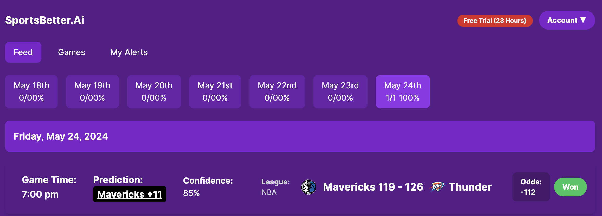

LINK TO WEBSITE:
https://www.sportsbetter.ai
Machine Learning NBA Sports Betting Analysis Tool
This project showcases my passion for leveraging cutting-edge technology
to solve real-world problems, embodied in a comprehensive NBA sports
betting analysis tool. The application utilizes Next.js for the front
end and Amazon SageMaker for the backend, which powers the machine
learning model that predicts game outcomes with a 70% accuracy rate.
Key Features:
Predictive Analytics: At the core of this tool is a
sophisticated machine learning model developed using Amazon SageMaker.
The model analyzes historical game data, player statistics, and other
relevant factors to predict the outcome of NBA games. This high level of
accuracy provides a strong foundation for making informed betting
decisions.
Real-time API Integration: The tool dynamically fetches
the latest odds from various sports books via API requests. By
constantly updating these odds, it ensures that the information is
always current and reliable for making timely betting decisions.
Opportunity Detection: Leveraging the prediction
model's output, the application evaluates the odds and identifies
potential betting opportunities. It calculates the probability of an
outcome against the offered odds, highlighting bets with favorable
conditions.
Intuitive User Interface: Built with Next.js, the front
end provides a sleek and user-friendly interface. Users can easily
navigate through predictions, betting opportunities, and historical data
insights, all presented in a clear and accessible manner.
Comprehensive Data Visualization: The tool includes
powerful data visualization features, allowing users to explore
predictions and historical performance through interactive charts and
graphs. This visual representation helps users quickly grasp complex
data and trends.
Automated Alerts: To ensure users never miss a betting
opportunity, the tool offers automated alerts. Users can configure the
system to receive notifications when specific betting conditions are
met, ensuring they stay ahead of the game.
Educational Resource: Beyond its practical application,
this project serves as an educational platform for understanding machine
learning and its application in sports analytics. It demystifies the
process of building predictive models and integrating them with
real-time data sources.
Through this project, I aimed to merge my interests in sports analytics
and advanced technology, demonstrating my abilities in machine learning,
data analysis, and web development. This NBA sports betting analysis
tool stands as a testament to my dedication to creating innovative,
functional, and impactful software solutions.
PICTURES NBA Project:
